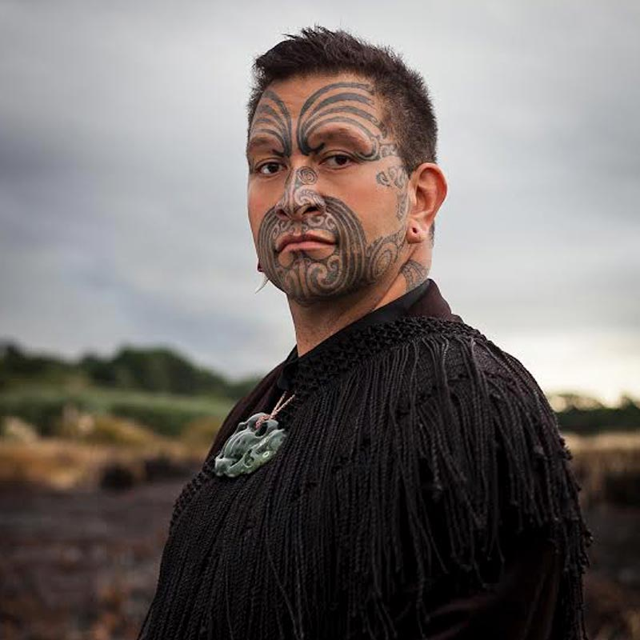

Rob Ruha
NUEVA ZELANDA
Embajador neozelandés de la cultura maorí llega a WOMAD con su “Haka soul”.
Tiene la cara tatuada, el peso de sus orígenes sobre los hombros y un catálogo de melodías que viene escribiendo desde que tenía 12 años. Rob Ruha es un premiado cantante y compositor neozelandés de ascendencia maorí que ha logrado traspasar las barreras idiomáticas y culturales de su nación con un cancionero donde todo es posible: desde los ritmos tribales de la cultura maorí, como el kapa haka y el mōteatea, hasta el soul, el reggae y hasta las síncopas del jazz. Aterriza en WOMAD Chile junto a su banda Black Quartet y con un estilo que él define como “Haka Soul”. Popular y tradicionalista a la vez.